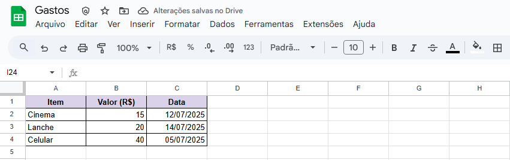
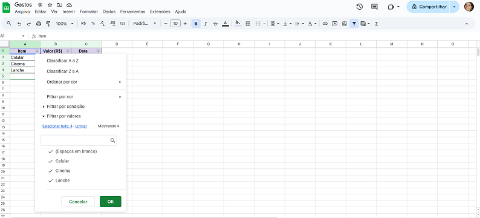
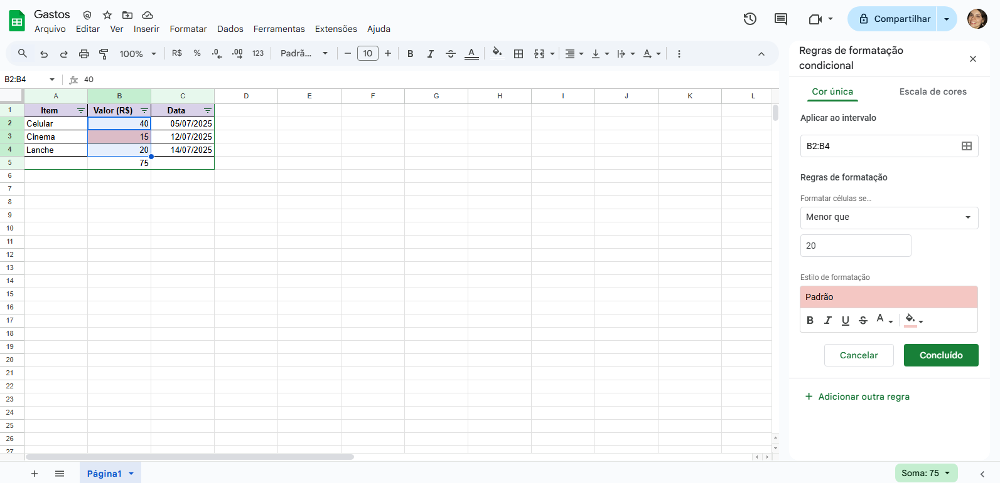
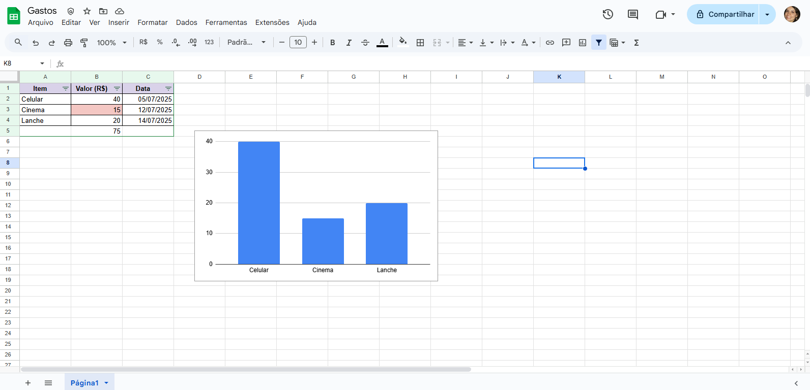

Bem-vindos à nossa aula sobre Google Planilhas! Vamos aprender a organizar dados, fazer cálculos e criar gráficos.
Vá para drive.google.com, clique em "Novo" > "Google Planilhas" > "Planilha em branco".
Vamos criar uma tabela de gastos mensais para praticar.
Na célula A1 digite "Item", na célula B1 digite "Valor (R$)", na célula C1 digite "Data"
Preencha algumas linhas com exemplos:

Vamos aprender a fazer cálculos automáticos!
Experimente na célula B6 digitar: =B2+B3
Isso somará os valores das células B2 e B3
Organize seus dados facilmente!

Destaque automaticamente informações importantes!

Transforme seus dados em visualizações claras!

Personalizando seus gráficos
Colabore em tempo real com seus amigos!
Vamos colocar em prática tudo o que aprendemos!
Resumo do que aprendemos: